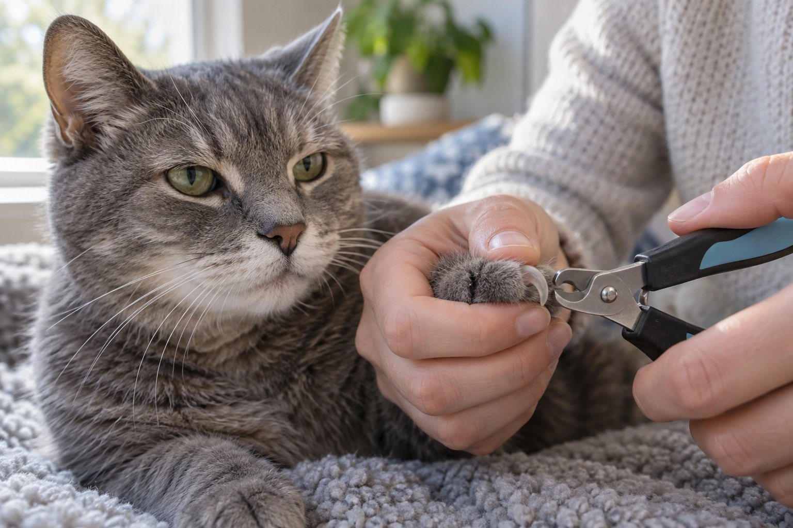

Trim only the sharp tip when you can clearly see a safe distance from the quick. Work on one or two nails at a time, reward cooperation, and ask a veterinary professional to demonstrate if you are uncertain.
A cat does not need to sit through a full manicure to benefit from nail care. Many successful home trims last less than a minute and end after one claw. The key is to decide whether trimming is actually needed, prepare the right tool, and stop before the cat has to fight to leave.
Check whether a trim is needed
Look at the claws while your cat walks, stretches, and uses a scratching surface. An indoor cat whose nails snag fabric, curve noticeably, or stay very sharp may need a small trim. Cats differ in activity and nail wear, so a calendar reminder is a prompt to inspect, not a command to cut. Older cats may use scratching posts less and can develop long, thick claws that need closer checks. A nail growing toward the paw pad is not a routine home trim; call a veterinarian.
Check each paw separately. The front claws may need attention sooner than the back ones, and one nail can grow differently from the rest. Gently extend a claw by pressing the toe pad if your cat accepts handling. In good light, look for the pink quick inside a pale nail and leave a clear margin before it. On a dark nail, only remove a very small tip if you are confident. If you cannot see a safe place to cut, ask a veterinary nurse or groomer to show you.
Do not confuse scratching with a request to stop nail growth. Scratching helps cats stretch, mark, and maintain claws; provide appropriate scratching surfaces even if you trim. Nail trimming can reduce accidental snags but does not replace a cat’s need to scratch. Declawing is not a routine nail-care alternative. If furniture damage is the concern, improve the scratching setup while learning a gentle trim, rather than expecting a single cut to change natural behavior.
Keep a short record of when you inspected and what you found. A photo of a nail that appears unusually curved can help when calling the clinic. If a claw is split, bleeding, inflamed, or painful, do not treat it as an ordinary trim. A cat who suddenly resists a paw that was previously easy to handle may be telling you about discomfort, not an attitude problem.
Prepare a short, calm session
Choose small, sharp clippers designed for pet nails and have a good light source. Set the tool where you can reach it without leaving the cat waiting. A favorite treat or quiet petting can mark each small success. Sit in a place where your cat already relaxes, such as a sofa or familiar blanket, and let the cat approach. Avoid starting immediately after noisy play or when the cat is guarding a favorite sleeping place. Another person can offer rewards if the cat is comfortable with both people.
Practice touching a shoulder, then a foreleg, then a paw over several sessions before clipping. Reward brief contact and release the paw. Later, press a toe pad gently to extend one claw, release, and reward again. These tiny steps teach the cat what will happen and give you a chance to notice discomfort. If the cat pulls away, loosen your hold. Pinning a cat down for a nonurgent trim risks scratches and can make the next attempt harder.
The tool can also be introduced in stages. Let the cat sniff it, then move it near the paw without cutting. On a later session, clip one clear tip and stop. Many cats accept a few nails a day more readily than four paws at once. Keep the session short enough that your cat will willingly return to the same spot another day. A trim is successful when both the paw and the trust remain intact.
Consider what happens if the cat cannot be safely handled. A veterinarian or groomer can trim nails and show you an approach tailored to your cat. If a nail is growing into the pad or the paw is painful, arrange veterinary care promptly rather than practicing for weeks. Training is for routine maintenance; it is not a substitute for treating an injury or an overgrown claw.

Clip the tip while protecting the quick
Hold the paw gently without twisting the leg. Press the toe pad enough to extend the claw, identify the sharp curved end, and position the clipper so it removes only a small tip. Keep well away from the pink quick. Make one clean cut, then release the paw and reward. If your cat shifts at the last moment, stop and reset; cutting while the paw moves raises the chance of pain. A small, cautious trim can be repeated later if needed.
Good light matters more than a perfect angle copied from a video. Pale nails often show where the living quick begins, but visibility varies. Dark nails are harder to judge, and thick senior-cat claws may look different from a kitten’s. Do not make a large cut to save time. If you trim too close and bleeding occurs, follow veterinary advice for basic first aid and contact the clinic if bleeding persists or the cat is distressed. Avoid improvised household chemicals on the nail.
Give the cat control over pauses. After one or two claws, offer the treat and let the cat move away. Do not chase them to finish the remaining nails. On another day, start with the paw that is easiest to handle. When a cat already trusts the routine, you may be able to trim more in one sitting, but there is no prize for completing every claw at once. The amount of trimming should fit the cat in front of you.
Check the dewclaws carefully because they may not wear against surfaces. These claws can be easy to overlook under fur. Do not pull hair hard to expose them; part it gently or ask for help. If a claw curls toward the pad, causes limping, or appears embedded, a veterinarian should examine it. You may not be able to see how much of the claw is hidden in tissue, and a home cut could leave a wound.
When to trim and when to call
Trim a tiny tip and reward.
Ask a professional to demonstrate.
Contact a veterinarian.
Help a cat who dislikes paw handling
Start with the easiest version of the task: being near the cat with clippers still on the table. Reward calm behavior and put the tool away. On later days, touch a paw for a second, then release. Build a predictable sequence of touch, reward, and stop. Some cats tolerate a paw better while lying on a familiar blanket; others prefer to remain standing. Let the cat choose a stable position rather than turning them onto their back for convenience.
Look for early stress signals. A tail that lashes, skin twitching, ears turning sideways, sudden stillness, or repeated attempts to leave suggests the session should end. Hissing and swatting mean the plan has already gone too far. Shorter practice, a different time of day, or assistance from a feline-friendly professional may help. If resistance is new or limited to one paw, arrange a veterinary assessment to rule out pain.
Imagine a cat who allows a paw touch but retreats at the sound of clippers. Work on the sound without touching the cat: clip a piece of dry spaghetti at a distance, reward if the cat remains comfortable, and gradually bring the sound closer over days. Do not use this exercise if the noise itself frightens the cat; start farther away or choose a quieter tool. The goal is to separate the sound from a sudden hold and to let the cat predict what comes next.
Some households find a helper useful, but help should not mean strong restraint. One person can offer a treat while the other clips a single tip. If the cat stops eating or tries to escape, pause. If repeated attempts are unsafe, book a professional trim and continue low-pressure handling practice at home between appointments. Cooperative care often takes longer at first and saves stress later.
Keep nail care connected to whole-cat wellbeing
Inspecting nails is also a chance to notice paw-pad injuries, swelling, or a new reluctance to jump. A cat with arthritis or other discomfort may be less able to scratch and may need a different nail-care plan. Ask your veterinarian how often to check and whether the cat’s claws are affecting walking. Do not assume a long nail is only cosmetic when a cat changes how it bears weight.
Provide stable scratching surfaces in the positions your cat likes. Some cats prefer tall vertical posts, others horizontal cardboard. A post should not wobble when the cat stretches. Scratching helps shed outer claw layers and supports normal behavior, but it does not guarantee that every claw stays short. Inspect again after a few weeks and adapt your routine to what you find. Keep the clippers in a consistent place so the next calm opportunity is easy to use.
Avoid making a trim the price of receiving affection. If every quiet lap visit leads to paw restraint, the cat may begin avoiding the lap. Separate ordinary social time from grooming time, use a simple cue, and reward even when you decide not to clip. If a trim has gone badly, give the cat a break before starting again with easier handling. Trust is part of the care plan.
The useful endpoint is a cat who walks comfortably, has no nails catching or curling into the pads, and can tolerate at least a brief paw check. That outcome may come from short home sessions, professional help, or both. Review the approach whenever age, activity, or health changes. Nail care should support the cat’s comfort, not turn a small maintenance job into a household battle.
Keep the clipped pieces out of a kitten’s reach and inspect the tool before each use. A dull clipper can crush rather than make a clean cut. If the cat has unusually thick or brittle nails, ask the veterinary team whether a different tool or professional schedule is safer. Do not peel or split a nail sheath manually when it appears attached; the normal outer layer may come away with scratching, but a painful nail needs an examination.
Make a practical plan for the back paws instead of assuming they can be handled exactly like the front. Some cats allow a back paw only while lying on one side, and some need a separate session on another day. If your cat jumps away after two front nails, stop there. Completing a few claws without fear gives you a path to finish the rest over the week. Label the date and paws completed so no one repeatedly handles the same sore toe.
If your cat lives partly outdoors, discuss the value and risks of trimming with your veterinarian. Claws support climbing and defense, and outdoor needs may differ from those of an indoor cat. Whatever the lifestyle, check for overgrowth and injuries. Do not make a major change to claw length solely to protect furniture; pair the decision with safe scratching options and the cat’s actual environment.
Continue exploring
For a broader routine, read How Often Should You Change Cat Litter?, Why Is My Cat Suddenly Hiding?, and How to Help a Cat Feel Safe in a Carrier.
Frequently Asked Questions
How often should I check my cat’s nails?
Look at each paw regularly and use a calendar reminder if it helps. Many indoor cats need a trim every few weeks, but inspect the actual length and comfort rather than cutting on a fixed date.
Can I use human nail clippers?
A small pet nail clipper often gives better control. Ask a veterinary professional to demonstrate a tool and angle suitable for your cat, especially if claws are thick or dark.
What if I accidentally cut the quick?
Stop the session, follow your veterinarian’s first-aid advice, and contact a clinic if bleeding continues or your cat seems painful. Resume future trims with smaller cuts and more visible light.
Editorial references
These resources informed the general guidance in this article. They do not replace advice tailored to your pet.
This guide offers general information. Your pet’s age, health, and history may call for a different plan. For medical concerns, ask your veterinarian.